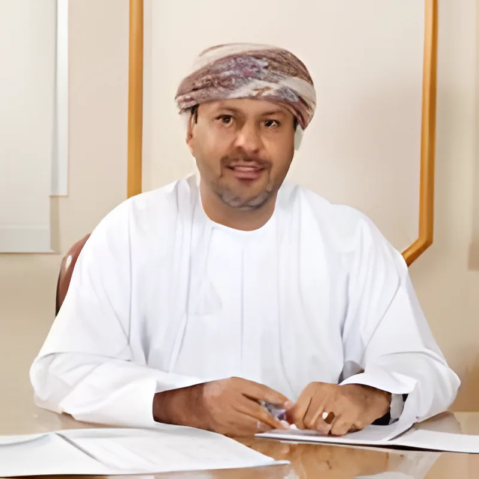

Al Nab’a Infrastructure L.L.C.
A first-grade contracting company in Oman: building and contracting, property management and maintenance. That’s us.
Al-Nab’a Infrastructure L.L.C. is a first-grade contracting company in the Sultanate of Oman, and part of the Al Nab’a Group, which began in 1984.
“From a humble beginning in 1984, our journey has made us pioneers in integrated facilities management, soft services, catering, infrastructure development and equipment trade.”
“In our race towards the future, ‘Unlimited Ambitions’ will evolve as the guiding force.”

Sayyid Khalid Al Busaidi, an entrepreneur and educationist, founded the Al Nab’a Group and has led it for more than 25 years. He has brought together experienced professionals from Oman and abroad to run the group’s companies.
The group is run on a clear system: professional people with defined authority and responsibility, quality processes, business ethics, commitment and integrity. His vision is to extend the group’s services to the UAE, Qatar and Saudi Arabia; Al Nab’a Infrastructure already has an office in Musaffah, Abu Dhabi.
The group companies are overseen by a board of trustees: the Chairman, the group heads of Internal Audit & Quality Control, Finance & Accounts, and Administration & HR, with Finteq Enterprises as management consultant and Khamis Al Abry & Suleiman as legal consultant.
When a building needs more than builders, the rest of the group is a phone call away.
A first-grade contracting company in Oman: building and contracting, property management and maintenance. That’s us.
Al Nab’a Holding L.L.C., the holding company of the group.
The largest facility management company in Oman, with almost three decades of work and around 7,000 skilled staff.
Supplies industrial kitchen, bakery and laundry equipment, generators and street lighting, to clients across the GCC.
Industrial catering for companies and institutions at their own sites, with a central kitchen at Misfah.
From the group’s own news pages.
Al Nab’a starts out in Oman.
Al Nab’a Services opens a full division for integrated facilities management.
The group celebrates 30 years of work in the Sultanate.
An agreement with National Buildings Construction Corporation, a Government of India enterprise, to grow in infrastructure and civil construction in and outside Oman.
The group brings ISO 9001, ISO 14001 and OHSAS 18001 together in one system, the first in Oman’s facilities sector.
TÜV SÜD certifies our quality system for the construction of commercial and residential buildings.
Our people are our biggest asset. Beyond the training each trade needs, we keep training: to maintain, upgrade and update skills. Our workers get regular safety training, good living quarters, proper food and medical care.